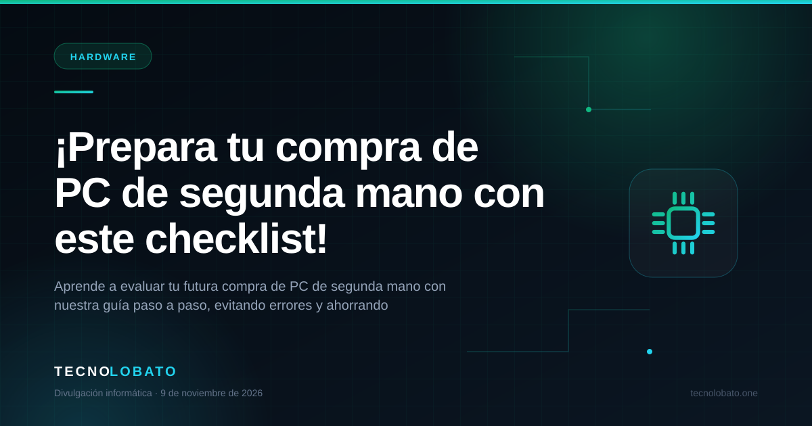

Divulgación informática
Aprende informática sin humo
Un artículo nuevo cada día sobre hardware, seguridad, redes y software. Explicaciones claras, consejos prácticos y cero tecnicismos innecesarios.
Un post diario
1 artículo publicado
Hecho en Chipiona (Cádiz)

Último artículo
Hardware
4 min de lectura
¡Prepara tu compra de PC de segunda mano con este checklist!
Aprende a evaluar tu futura compra de PC de segunda mano con nuestra guía paso a paso, evitando errores y ahorrando dinero.

Leer el artículo →¿Tienes un problema real?
La teoría está bien. Resolverlo, mejor.
Si tu equipo no arranca, se calienta o quieres montar algo a medida, cuéntanoslo por WhatsApp y te orientamos sin compromiso.